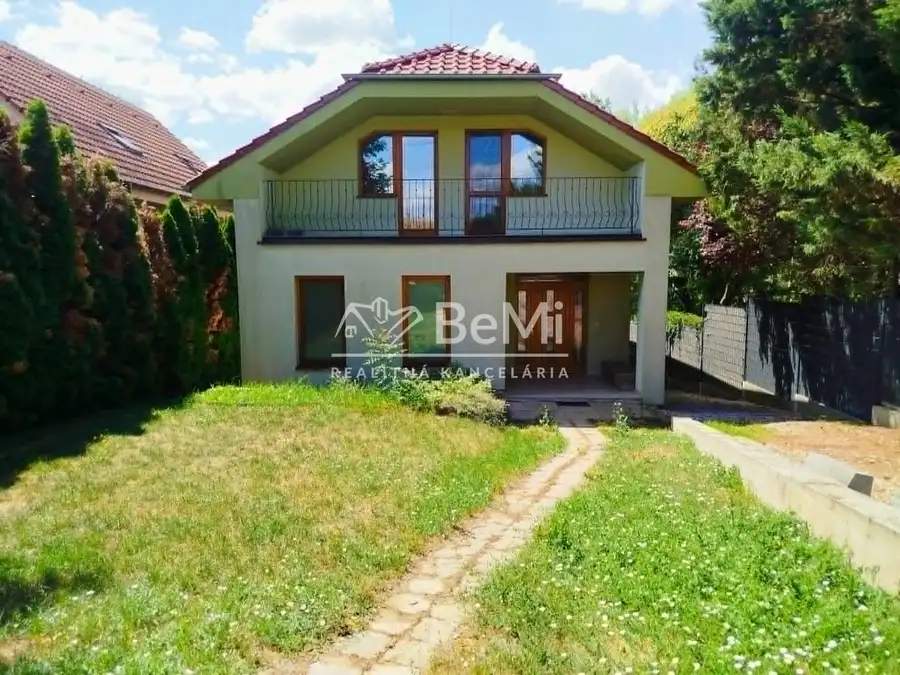
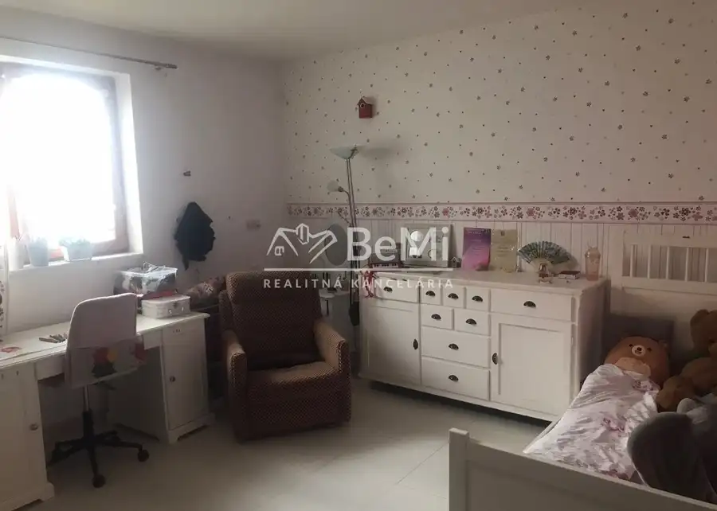
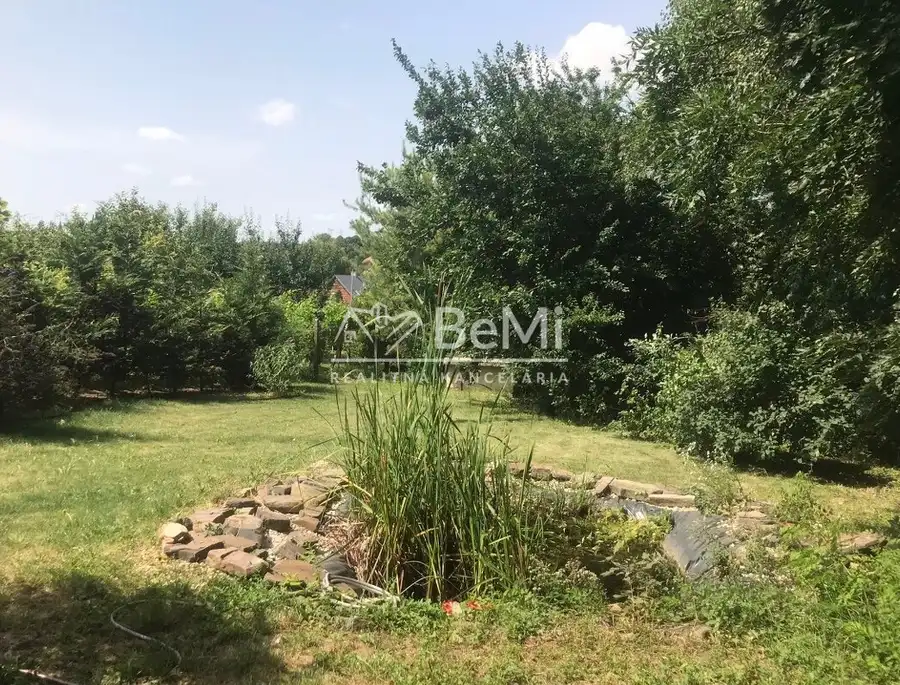
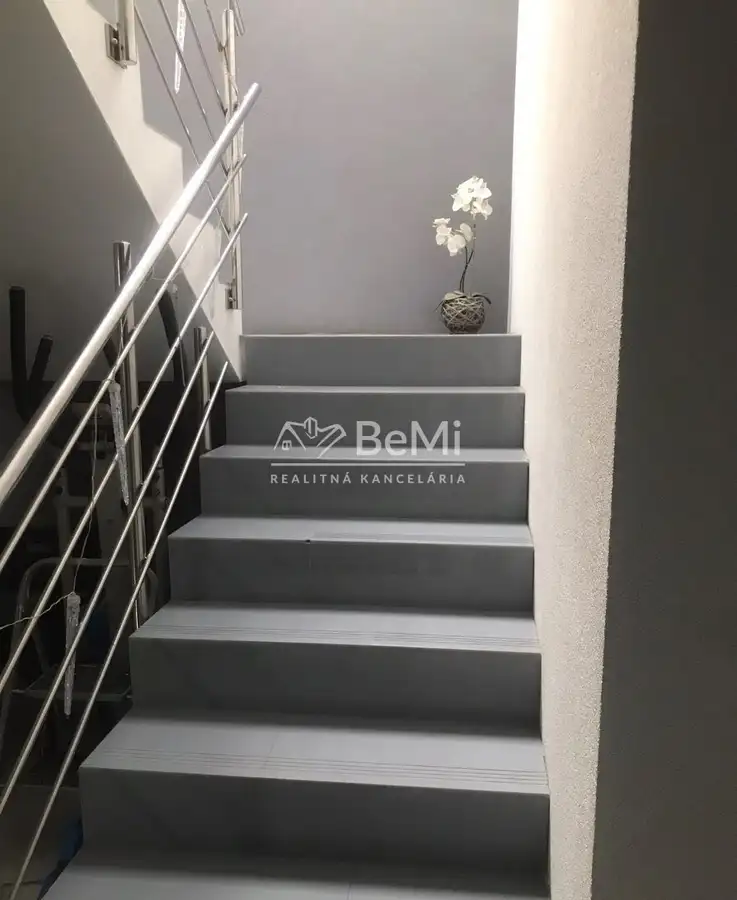
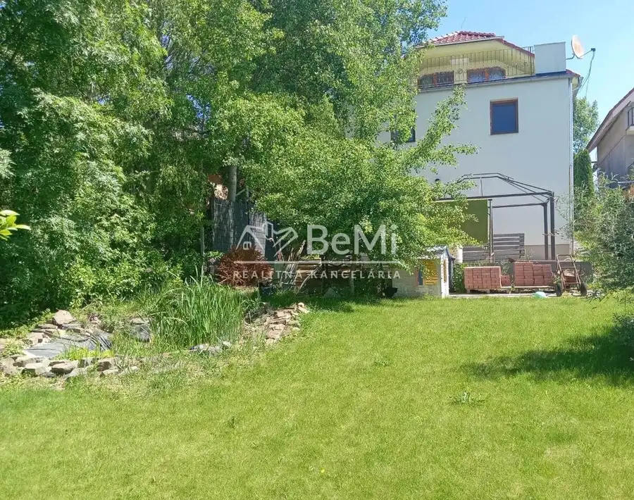
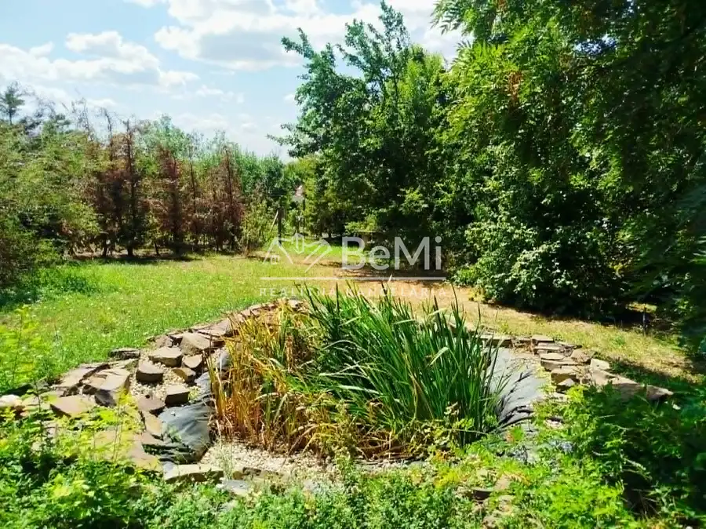

Na predaj 8-izbový rodinný dom v Lehote pri Nitre
Lehota







- Plocha185 m²
- StavČiastočná rekonštrukcia
- VlastníctvoOsobné
O nehnuteľnosti
Priestranný 8-izbový rodinný dom v obci Lehota – len pár minút od NitryHľadáte priestranné bývanie pre veľkú rodinu alebo nehnuteľnosť, ktorá ponúka dostatok priestoru aj na podnikanie? Ponúkame na predaj dvojpodlažný rodinný dom s obytným podkrovím, garážou a upraveným pozemkom s výmerou 898 m², situovaný v pokojnej a vyhľadávanej obci Lehota, vzdialenej približne 7 km od centra Nitry.Dom bol skolaudovaný v roku 2012 a je postavený z kvalitnej pálenej tehly so zateplením. Vďaka premyslenému dispozičnému riešeniu ponúka komfortné bývanie aj viacčlennej rodine, prípadne môže slúžiť ako sídlo firmy alebo na kombináciu bývania s podnikateľskými aktivitami.Dispozícia domuSuteréngaráž,dielňa,kopaná pivnica,úpravňa vody.PrízemieDennú časť tvorí priestranná obývacia izba s krbom, ktorá vytvára príjemnú atmosféru počas celého roka. Ďalej sa tu nachádza kuchyňa so špajzou, tri samostatné nepriechodné izby, kúpeľňa so sprchovým kútom a umývadlom, samostatné WC, technická miestnosť s plynovým kotlom Ferroli a vstupná chodba so schodiskom.PoschodieNa poschodí sa nachádzajú štyri izby. Dve z nich majú výstup na balkón a ďalšia ponúka priamy vstup na priestrannú terasu s výmerou 43,7 m², ktorá poskytuje ideálne miesto na oddych alebo rodinné posedenia. Súčasťou podlažia je aj kúpeľňa s WC a praktický šatník.Technické vybaveniePri výstavbe boli použité kvalitné materiály a dôraz bol kladený na komfort bývania. Dom disponuje:drevenými eurooknami s mramorovými parapetmi,podlahovým vykurovaním v celom dome,keramickou dlažbou vo všetkých miestnostiach,krbom v obývacej izbe ako doplnkovým zdrojom vykurovania,sedlovou strechou s betónovou strešnou krytinou Bramac,nerezovým zábradlím,zabezpečovacím systémom,napojením na elektrinu, plyn, obecný vodovod a internet.Na pozemku sa nachádza 13-metrová vŕtaná studňa, žumpa s objemom 10 m³ a čistička odpadových vôd.PozemokRovnováhu medzi bývaním a oddychom ponúka udržiavaná záhrada s okrasným jazierkom, množstvom okrasných drevín a ovocných stromov, medzi ktorými nájdete jabloň, hrušku, slivku či mandľu. Zadná časť pozemku je pripravená na vybudovanie altánku alebo letnej terasy podľa vlastných predstáv. Pozemok je kompletne oplotený, mierne svahovitý a prístupný z asfaltovej komunikácie cez kovovú posuvnú bránu a samostatnú vstupnú bránku.LokalitaLehota patrí medzi obľúbené obce v bezprostrednej blízkosti Nitry. Obyvateľom ponúka kompletnú občiansku vybavenosť vrátane materskej a základnej školy, zdravotného strediska, lekárne, pošty, potravín, kultúrneho domu či zberného dvora. Samozrejmosťou je výborné autobusové spojenie s Nitrou a rýchle napojenie na rýchlostnú cestu R1.K nehnuteľnosti je vypracovaný znalecký posudok.Ak hľadáte priestranný rodinný dom vo výbornej lokalite s kvalitným technickým prevedením, veľkým pozemkom a širokými možnosťami využitia, táto ponuka určite stojí za osobnú obhliadku.NAŠE CENY SÚ VRÁTANE PROVÍZIE ZA KOMPLETNÝ SERVIS A SÚ SCHVÁLENÉ MAJITEĽOM.Petra Mandáková 0918564715 p.mandakova@realitybemi.sk
Parametre
- Druh
- Rodinný dom
- Dátum zverejnenia
- 24. 07. 2026
- Plocha pozemku
- 898 m²
- Počet izieb / miestností
- 8
- Stav nehnuteľnosti
- Čiastočná rekonštrukcia
- Typ
- Predaj
- Vlastníctvo
- Osobné
- Úžitková plocha
- 185 m²